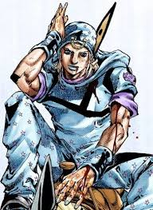

Johnny Joestar

A new start
Johnny Joestar was once a successful jockey, but became paralyzed from the waist down. He entered the Steel Ball Run despite the odds, paying the $1,200 USD entry fee with help from people who believed in him. The race gave Johnny a chance to reclaim a purpose and change his life.

The road to New York
The race crossed 6,500 km from San Diego to New York City. More than 1,500 competitors entered, but only about 20 reached the finish. Across deserts, mountains, and rivers, Johnny's determination became as important as his riding skill.
Learning the Spin
During the 50-day race, Johnny met Gyro Zeppeli, who taught him about the Spin. Their partnership helped Johnny grow as a competitor and face the challenges ahead with renewed determination.